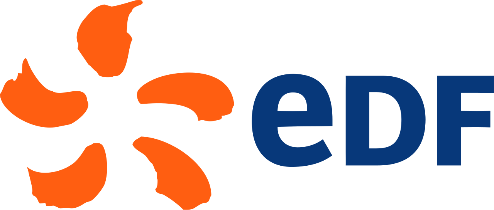

{kind=link}
{kind=link}
{kind=link}
{kind=link}
{kind=link}
{kind=link}
{kind=link}
{kind=link}
{kind=link}
{kind=link}
{kind=link}
| Gain de Temps | Gain Financier | Gain de Qualité |
|---|---|---|
| ~ 4400 heures1 | 330,000.00 €2 | |
| 1 Sur la base d’un calcul de 111 fiches \(\times\) ~ 40 heures | ||
| 2 Sur la base du coût d’un ETP (~ 120k €) correspondant à 1600 heures | ||
Pertes d’armoire de contrôle-commande et post-traitement de résultats de simulation
Corentin Ducloux – Master 2 Mécen
13/09/2024
Table des matières
Table des matières
Table des matières
1 | INTRODUCTION
Présentation d’EDF
EDF est une société française de production et de fourniture d’électricité.
\(\rightarrow\)
Date de création : 1946 \(\rightarrow\)
Statut juridique : Monopole d’Etat (EPIC) 1 puis Société Anonyme 2

Quelques chiffres clés (2023)
Source : EDF en bref – EDF
Mix électrique d’EDF en France
Remarques
- Prépondérance du nucléaire :
- Intérêt : approvisionnement en continu
- Part importante d’hydroélectrique :
- Intérêt : levier d’ajustement
\(\rightarrow\) ♻️ Plus de 90% d’électricité bas carbone.
Parc nucléaire français
57 tranches en exploitation.
- Palier CP0 : 900 MW
- Palier CPY : 900 MW
- Palier P4 : 1300 MW
- Palier P’4 : 1300 MW
- Palier N4 : 1450 MW
- Palier EPR : 1600 MW
Source : Le Nucléaire en chiffres – EDF
Une tranche de 900 MW produit en moyenne chaque mois 500 000 MWh, ce qui correspond à la consommation de 400 000 foyers environ.
Présentation du CNEPE
Le CNEPE 3 est un centre d’ingénierie implanté à Tours, spécialisé dans la réalisation et la maintenance de la partie conventionnelle des installations nucléaires.
2 | MISSIONS
Perte d’armoire de contrôle-commande
Architecture I&C
Une installation nucléaire est très complexe : il faut un pilotage fiable et précis pour gérer tous les paramètres et systèmes nécessaires au fonctionnement de l’ilôt nucléaire et conventionnel.
Etudes de perte d’armoires (HPC)
Objectif : Décrire les conséquences fonctionnelles et sûreté quand une armoire de contrôle-commande est perdue pour l’EPR d’Hinkley Point C.
Difficultés de l’activité
- Nombre de sources de données à croiser,
- Nombre de notes à fournir,
- Nombre d’erreurs humaines potentielles,
- Très fastidieux.
\(\rightarrow\) Création d’une application
HPConnect
Exemple de Fiche de sortie
Gains estimés – HPConnect
Gain de qualité :
- Evacuation des erreurs humaines,
- Récupération et mise en forme de la donnée brute (raw data),
- Facilité de mise à jour de la donnée dans l’outil.
2 | MISSIONS
Post-traitement de résultats de simulation
Simulateur d’une tranche
Le simulateur d’une tranche permet d’étudier le comportement dynamique théorique d’une unité de production.
Intérêt des simulateurs :
- Formation des équipes de conduite,
- Vérification de modifications sur l’installation,
- Vérification du bon déroulement des procédures d’essai.
\(\rightarrow\) Une fois la session sur simulateur terminée, possibilité d’exporter les résultats de simulation sous forme de fichier
Exemple de données de simulation
| Fichier de simulation standard | |||
|---|---|---|---|
| TpsSimu | 3BEE8686.aValeur | 3AGP7167.bValeur | 3PIJ1942.cValeur |
| 100 | 81.125 | 81.125 | 81.125 |
| 300 | 80.129 | 80.129 | 80.129 |
| 500 | 80.128 | 80.128 | 80.128 |
| 700 | 80.124 | 80.124 | 80.124 |
| 900 | 80.111 | 79.860 | 54.320 |
| Note : Données totalement fictives. | |||
ViZiR
“Visualisation in
“Visualisation in
Ce qu’apporte ViZiR
ViZiR – Démonstration
{kind=link}
{kind=link}
{kind=link}
{kind=link}
{kind=link}
{kind=link}
Partie Technique
🛠 Stack technique utilisée :
plotlypolarsstreamlit
Utilisation avancée : session_state de streamlit
Intégration dans un environnement de test : Datatools (Kubernetes / conteneurs)
Présence de tests unitaires,
bonnes pratiques de code, documentation intégrée
3 | CONCLUSION
Quelques remarques pour conclure
{kind=link}
Travail sur deux sujets différents :
- HPConnect \(\Rightarrow\) Pertes d’armoire de controle commande
- ViZiR \(\Rightarrow\) Post-traitement de résultats de simulation
Mobilisation de compétences techniques variées (
, , , SQL) Le Nucléaire : un domaine complexe et intéressant, en pleine relance.
MERCI DE VOTRE ATTENTION !
4 | ANNEXES
Package R {cabinetloader}
{kind=link}
Annexe - session state
def initialize_states() -> None:
"""
Fonction initialisant tous les session_states par onglet
L'interactivité d'une application Streamlit est liée au fait que chaque
action utilisateur ré-éxécute entièrement le script de l'application.
Cependant, ce comportement n'est pas toujours souhaitable et peut
entraîner de nombreuses difficultés dans le développement.
=> Pour pallier à ce problème,`st.session_state` permet de stocker et
partager des variables entre chaque ré-éxécution du script.
En pratique, cette fonction permet donc d'initialiser la configuration
de tous les input widgets.
"""
_states_sidebar_import()
_states_conversion()
_states_graph()
_states_admin()
EDF | DISC | CNEPE
Notes de bas de page
Etablissement Public à Caractère Industriel ou Commercial
A partir de 2004
Centre National d’Equipements de Production d’Eléctricité
Small Modular Reactor